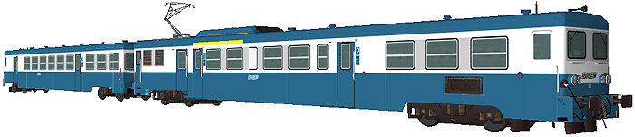
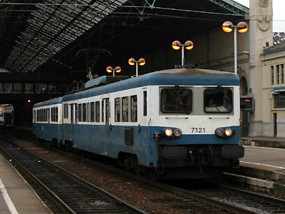
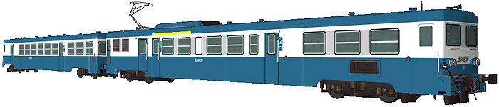

La Z 7100 version 
B. Astorg a réalisé la Z 7126 et sa remorque.

Ferrovia - 26 Avril 2015
Z 7100
Les Z 7100 sont des automotrices monocourants 1,5 kV continu.
Quelques données techniques
Tension d'alimentation : continu 1,5 kV
Pour plus d'info :
La fiche Z 7100 sur Wikipedia
L'inventaire des Z 7100 sur Trains du Sud-Ouest

La Z 7121 à Lyon Perrache (04/12/2004)
La Z 7100 version 
B. Astorg a réalisé la Z 7126 et sa remorque.
